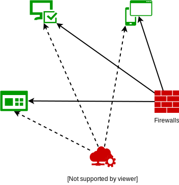
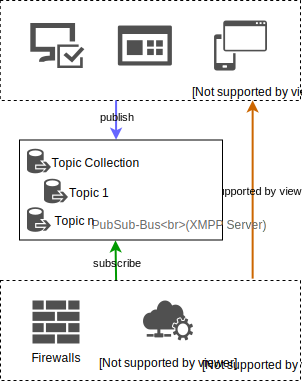
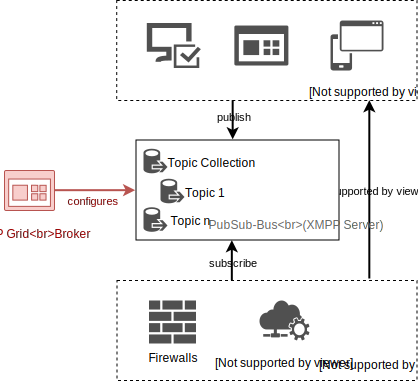
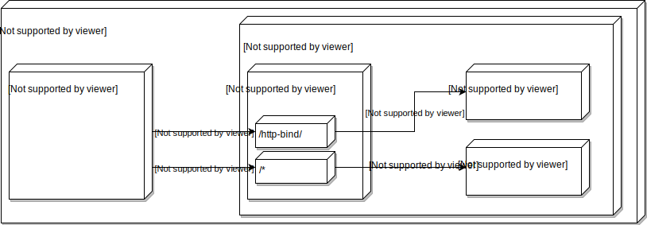
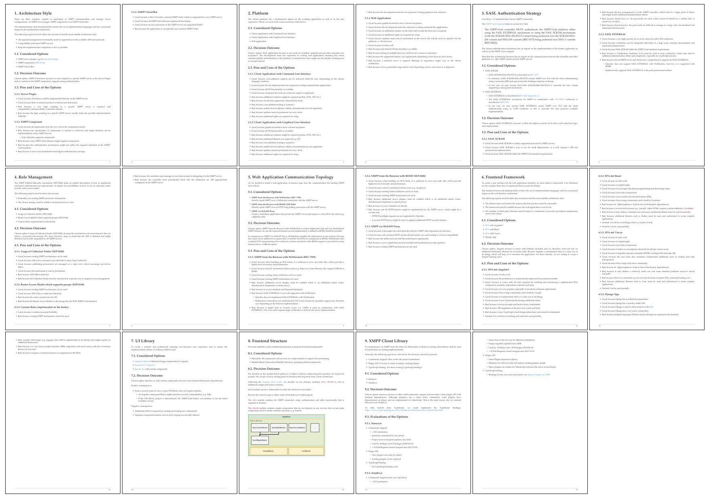
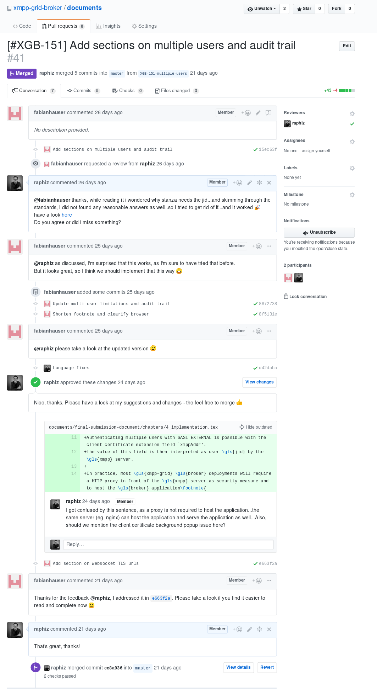

XMPP-Grid Broker
Final Presentation
Raphael Zimmermann & Fabian Hauser
🔭 Outline
- Problem Description
- Our Solution (Demo)
- Our Focus
- Conclusion
- Questions
🏋
The Problem
🔏 Challenge: Exchange Security Data

📚 IETF Draft
"Using XMPP for Security Information Exchange"

🎉 XMPP-Grid Broker

🗃 Task Description
- ✓ Understand the Standards (IETF, XEPs)
- ✓ Collect Requirements
- ✓ Architecture
- ✓ Technology Selection
- ✓ Implementation
Full Task
Description
📜 Understanding the Standards
🗃 Task Description
- ✓ Understand the Standards (IETF, XEPs)
- ✓ Collect Requirements
- ✓ Architecture
- ✓ Technology Selection
- ✓ Implementation
🏗
Our Solution
🛠️ Development Setup

💻 Demo
🚀 Launch
🔬
Our Focus
🎯 Design Goals
- 🔒 Security
- 🖥️ Cross-Plattform
- ⏲️ Long-Term Maintainability
- 🐳 Reproducibility
👷 Software Engineering
🏗 Architectural Decisions

🔍 Code Reviews
124 Pull-Requests on GitHub

♼ Continuous Integration
Also with documentation

📊 Testability
324 Test Cases
🔧 Technical Conclusions
- XMPP PubSub is still a draft
- SASL EXTERNAL + Browser = 💔
- Angular + TDD = 💔
🎓 Personal Conclusions
- Interesting Project
- Most requirements implemented*
- Working with many standards (drafts)
* See final submission document for details
✨ Future
- Application in production
- Good basis that can be built upon
- XMPP-Grid Draft → Standard
🔥
Thank you!
Questions?